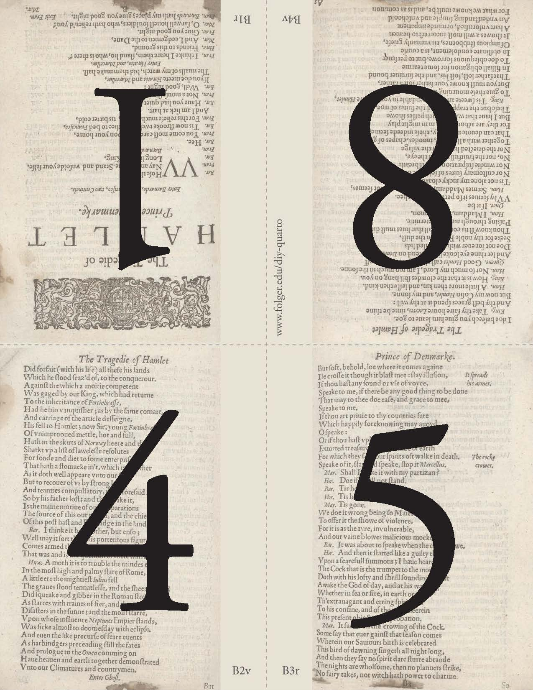
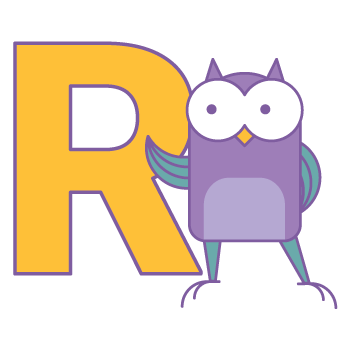
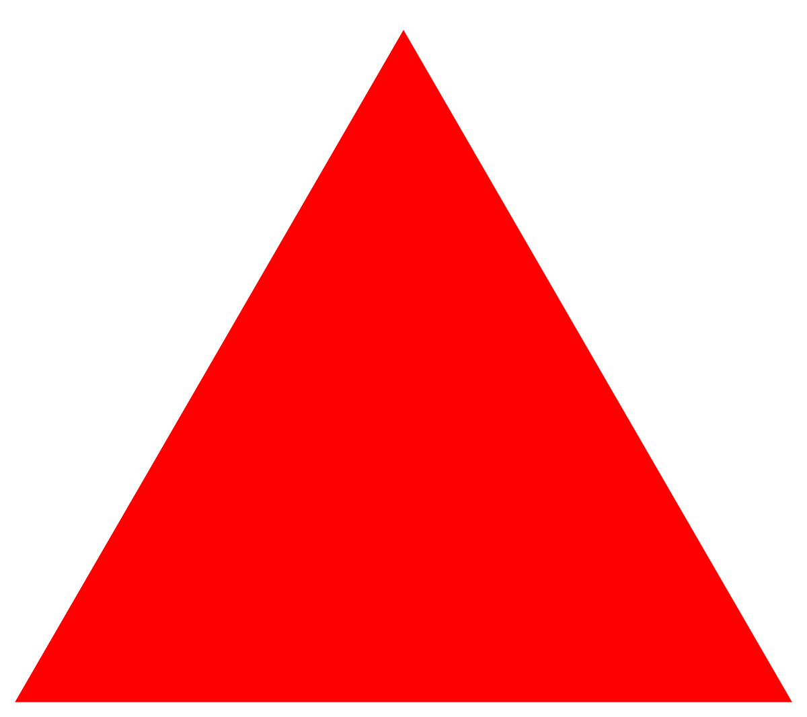
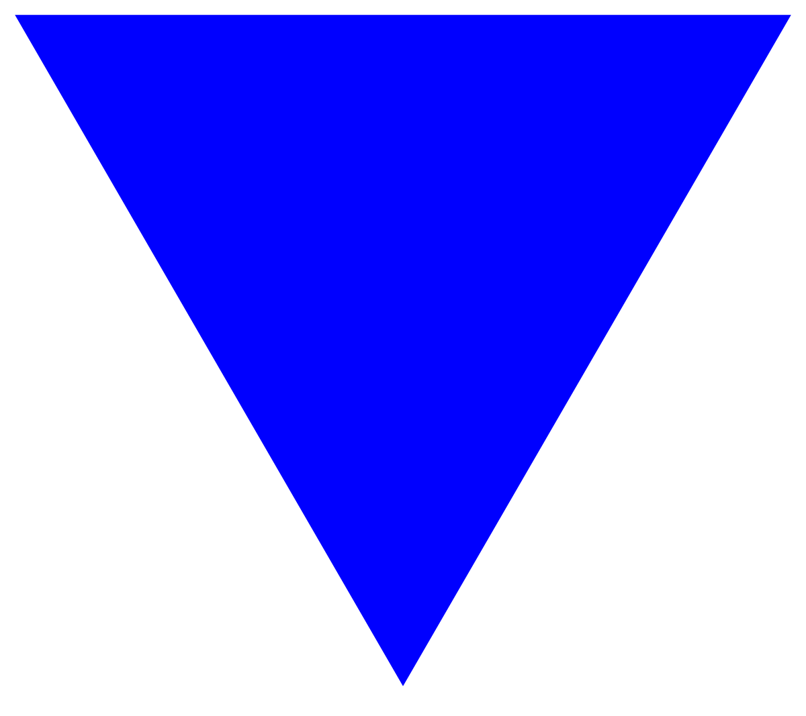
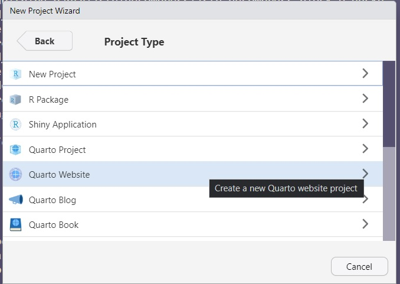
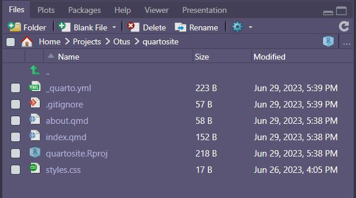
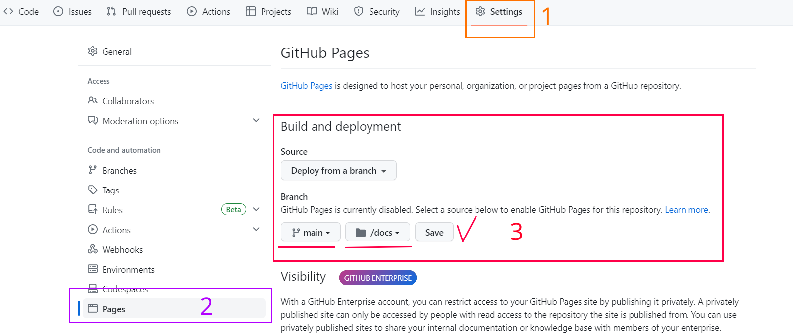

Язык R для анализа данных
Утилита формирования отчётов Quarto
otus.ru
Проверить, идет ли запись
Меня хорошо видно & слышно?
Ставим “+”, если все хорошо “-”, если есть проблемы
Тема вебинара
Утилита формирования отчётов Quarto
Андрей Павлюченко
Старший медиааналитик
Об опыте:
Мониторинг и исследования медиа (Brand Analytics, Медиалогия, R, Python)
Люблю делать: Text Mining, графовый анализ, интерактивные дэшборды
+7 915 254-87-83 / a.pawluczenko@gmail.com / @a.pawluczenko
Правила вебинара

Активно
участвуем
Обсуждаем
в Telegram
Пишем в чат или поднимаем руку и говорим
Камера – желательно, но не обязательно
Вопросы вижу в чате, могу ответить не сразу
Маршрут вебинара
Цели вебинара
К концу вебинара вы сможете:
- Разбираться в возможностях, форматах и опциях Quarto.
- Создавать базовые документы в Quarto для разных форматов.
- Наполнять их различным статическим и динамическим контентом.
- Использовать возможности модульного и параметрического дизайна Quarto.
- Использовать свои знания и документацию Quarto для создания продвинутых документов.
Смысл
Зачем это нужно? Для того, чтобы:
- Готовить качественные отчеты с настраиваемым дизайном, чтобы эффективно представлять результаты анализа.
- Создавать интерактивные документы, чтобы пользователи могли исследовать данные и принимать решения на основе интерактивных элементов.
- Адаптировать документы под различные цели и требования, обеспечивая гибкость и персонализацию.
Знакомство с Quarto
Что за Quarto?

Источник: Tom Mock на GitHub
Quarto (отсылка к формату in quarto) – система публикации документов от Posit (бывшая RStudio, создатели Tidyverse).

Что за Quarto?
Quarto – не библиотека R, а автономное приложение с интерфейсом командной строки. Например, даже без установленных R или Python вы можете:
- Создать документ
document.mdв своем любимом редакторе. - Добавить YAML-метаданные (как Rmarkdown, но см. ниже).
- Сверстать документ в нужном вам формате.
Что за Quarto?
RStudio IDE новых версий включает Quarto, а также предоставляет для него редактор кода с автозаполнением и удобный визуальный редактор.
Quarto имеет более широкие по сравнению с Rmarkdown возможности. Можно воспринимать его как:
- Rmarkdown++;
- MS Word с гибридным интерфейсом;
- Dreamweaver для аналитиков и ученых.
Что нового: не только R
Quarto умеет обрабатывать код на следующих языках:
- R;
- Python;
- Julia;
- JavaScript (Observable).
Что нового: многоформатность
Quarto поддерживает множество форматов вывода, включая HTML, PDF, EPUB и другие. В Rmarkdown для большинства этих форматов необходимы дополнительные библиотеки:
| Возможности Quarto | Реализация в Rmarkdown |
|---|---|
| HTML | ✓ |
| ✓ | |
| DOCX/ODT | ✓ |
| PowerPoint | ✓ |
| сайт/блог | distill, blogdown |
| HTML-презентация | revealjs |
| книга | bookdown |
| интерактивная презентация | flexdashboard |
Что нового: модульный дизайн
Quarto позволяет разбивать анализ на маленькие, повторно используемые компоненты, которые можно собирать в сложные документы. Это делает повторное использование и комбинирование частей вашего анализа легким.
Сложный проект на R может состоять из нескольких скриптов, содержащих загрузку и предобработку данных, специальные функции, моделирование и визуализацию. Quarto позволяет точно так же использовать файлы .qmd: собирать их в большие проекты, использовать вывод одной ячейки кода много раз.
Пример: включить все объекты из файла _data.qmd
Что нового: модульный дизайн
Quarto позволяет использовать параметры, c которыми можно готовить разные отчеты из одного и того же документа, например:
- отчеты для разных регионов;
- отчеты для разных периодов;
- моделирование с разными допущениями или алгоритмами.
Что нового: модульный дизайн
Значения параметров используются в качестве шаблона в коде документа, например:
Затем документ можно сверстать с разными параметрами из R или командной строки:
Что нового: модульный дизайн
Некоторые преимущества модульных документов включают:
- Повторное использование: можно повторно использовать те же ячейки в нескольких документах.
- Гибкость: можно повторно комбинировать ячейки разными способами для разных выводов или целей.
- Абстракция: скрывать детали реализации от читателей документа.
- Удобство поддержки: нужно вносить изменения только в одном месте.
Что нового: расширенное форматирование
Quarto изначально включает все необходимое для научных публикаций и воспроизводимого анализа:
- обширную поддержку перекрестных ссылок и цитат;
- расширенное аннотирование рисунков, таблиц и кода;
- нативную поддержку графов и блок-схем (
mermaidиGraphviz); - расширенные возможности написания формул \(\LaTeX\).
Пример: Запись матрицы (пакет amsmath)
$$A = \begin{pmatrix}
4&-3&-3\\
1&2&1 \\
1&1&2
\end{pmatrix}$$\[A = \begin{pmatrix}4&-3&-3\\1&2&1\\1&1&2\end{pmatrix}\]
Что со всем этим делать?
Quarto «из коробки» позволяет создавать более 40 форматов документов (format: ваш-формат).
Для каждого формата доступны по нескольку десятков опций.
Знание CSS/SASS, \(\LaTeX\) или Pandoc дает почти безграничные возможности настройки внешнего вида отчетов.
Quarto динамично развивается, появляются новые возможности.
Так что, «читайте руководство»?
Безусловно. Но сейчас вы получите карту для ориентации во вселенной Quarto.
И сделаете по ней уверенные шаги.
Алгоритм работы
Общий алгоритм проектов Quarto

Общий алгоритм проектов Quarto
Кстати, код диаграммы:
Как работает Quarto
При работе с R система Quarto сначала создает markdown-документ, который затем конвертируется в нужный формат программой pandoc.
Источник: Tom Mock на GitHub
Типы проекта


Проекты других доступных типов можно создать вручную, прописав format: [наш-формат]
Типы проекта
Из одного документа можно сверстать несколько документов в разных форматах. При этом отображение можно настроить отдельно для каждого формата.
Note
Только формат HTML позволяет создавать интерактивные документы.
При этом компоненты Shiny требуют хостинга на удаленном сервере. Компоненты, основанные на JavaScript, будут интерактивными у читателей без дополнительных сложностей.
Типы проекта
Пример настройки: HTML
Опции HTML позволяют настраивать макет страницы, базовые элементы стиля и многое другое.
---
format:
html:
theme:
light: pulse
dark: cyborg
css: styles.css
mainfont: corbel
fontsize: 1.1rem
fontcolor: "#090103"
linkcolor: "#E81444"
monofont: consolas
title-block-style: plain
title-block-banner: "#DDBEED"
title-block-banner-color: "#AA26EE"
margin-top: 40px
---Готовые темы Quarto представлены на сайте Bootswatch.
Пример настройки: PDF
В PDF тоже можно настраивать макет (и размер) страницы, базовые элементы стиля, а также добавлять файлы \(\TeX\) для более тонкой настройки.
---
format:
pdf:
mainfont: Georgia
monofont: Consolas
linkcolor: Bittersweet
citecolor: Mahogany
urlcolor: MediumOrchid
papersize: A5
fig-format: png
include-in-header:
- text: |
\usepackage[english,russian]{babel}
\usepackage{fontspec}
\setsansfont{Courier New}
\usepackage{amsmath,amsfonts,amssymb,amsthm,mathtools}
\usepackage{icomma}
---Интересно ваше мнение:
Какой формат вам кажется самым интересным для работы?
Какой формат, по вашему мнению, вам больше всего пригодится в работе?
Кастомизация проекта: элементы Quarto
YAML-заголовки
YAML («YAML Ain’t Markup Language») – язык сериализации данных, как JSON и XML. Используется Quarto для записи конфигурации проекта. Формат записи – опция: значение.
Код конфигурации YAML отделяется тремя дефисами сверху и снизу:
YAML-заголовки
В качестве значения может быть указан список:
Если в качестве значения передается многостроковый текст, он печатается с новой строки после знака | (источник: Mickaël Canouil на GitHub):
YAML-заголовки
К метаданным можно обращаться через синтаксис Quarto {{<…>}}:
[{\{< meta author >}}]{style="font-family:Courier;font-size:3em;float:right;"}
{#fig-otus-r-owl}otus.ru

Фрагменты кода
Как и для Rmarkdown, возможность интерпретировать код и встраивать результаты его исполнения в документ является основной функциональной особенностью Quarto.
В Quarto опции для отдельного фрагмента кода, если они нужны, записываются внутри блока в формате YAML и начинаются с #|:
Фрагменты кода
В Quarto очень легко подсвечивать строки кода:
Также можно выбрать или настроить оформление кода
Контейнеры pandoc
При работе в Quarto рекомендуется использовать универсальный формат контейнеров pandoc
- Блочный контейнер – аналог
<div>ограничивается двоеточиями (не менее 3) с опциональными атрибутами в фигурных скобках:
Этот маленький текст будет окружен прямоугольной рамкой
Note
А это будет примечание
Контейнеры pandoc
При работе в Quarto рекомендуется использовать универсальный формат контейнеров pandoc
- Строчный контейнер – аналог
<span>записывается в квадартных скобках, за которыми следуют атрибуты в фигурных скобках:
Форматирование изображений
Синтаксис изображений похож на гиперссылки, но с восклицательным знаком в начале:

Надпись в квадратных скобках считается подписью к изображению. Ее можно оставить пустой.
Текст в кавычках после url изображения – его всплывающее название (<img … title=…>)
Форматирование изображений
Можно добавлять атрибуты, например, выравнивание:
Собачка
Форматирование изображений
Можно сгруппировать несколько изображений и расположить их определенным образом:
::: {#fig-two-triangles layout-ncol=2}
{#fig-triangle-red width=20}
{#fig-triangle-blue width=20}
Две картинки
:::

Форматирование изображений
В качестве макета можно указать массив, каждый элемент которого – ряд в сетке:
::: {#fig-images layout="[[20,20], [40]]" style="font-size:0.5em;"}
{#fig-01 width=40}
{#fig-02 width=40}
{#fig-long width=80}
Три картинки
:::
Форматирование изображений
Если назвать контейнер с изображениями #fig-…, Quarto представит его как одно изображение из нескольких частей (как на предыдущем слайде) и пронумерует соответсвенно.
На изображения можно ссылаться: Рис. 2
Кстати, по умолчанию названия сопровождаются префиксом «Figure». Это можно изменить в настройках проекта:
Форматирование изображений
Для изображений, генерируемых кодом, параметры задают внутри блока:
Форматирование изображений
Блок кода, чье название начинается с fig-, генерирует пронумерованные изображения, на которые можно ссылаться:

Интерактивные элементы
Формат HTML и производные от него (как revealjs) позволяют добавлять в документ интерактивные элементы семейства htmlwidgets
Интерактивная диаграмма plotly:
library(plotly)
library(dplyr)
library(forcats)
# Небольшая предобработка: сделаем категориальную переменную явно категориальной
mtcars <- mtcars |>
mutate(am = fct_recode(as.character(am), 'Automatic' = '0', 'Manual' = '1'))
plot_ly(
mtcars,
x = ~wt,
y = ~hp,
z = ~qsec,
color = ~am,
colors = c('#BF382A', '#0C4B8E')
) |>
add_markers()Интерактивные элементы
Интерактивные элементы
Формат HTML и производные от него (как revealjs) позволяют добавлять в документ интерактивные элементы семейства htmlwidgets
Интерактивная карта leaflet:
Интерактивные элементы
Макеты страниц
Макет страницы – это то, как по умолчанию располагаются элементы на странице и друг относително друга.
По умолчанию Quarto использует Article layout: макет, оптимизированный для записаей блога и других веб-публикаций, а также для статей в формате PDF.
Другие доступные макеты:
full: какarticle, но заполняет контентом поля, если они не используются;custom: не содержит grid-макета, заполняет всю доступную ширину.
Макеты для интерактивного взаимодействия
Если вы используете интерактивные элементы с возможностью управления их отображения пользователем (как в Shiny), можно использовать раскладку, облегчающую интерактивное взаимодействие:
.panel-input: контейнер для элементов управления, располагающийся над контентом;.panel-tabset: помещает контент в несколько вкладок, между которыми можно переключаться;.panel-sidebarи.panel-fillили.panel-center: боковая панель для элементов управления и широкая панель для отображаемого контента.
Макеты для интерактивного взаимодействия
Панель можно задать:
- в теле документа через контейнер:
- во фрагментах кода, чтобы указать, куда отправятся сгенерированные кодом элементы:
Комплексные публикации
Сайты, блоги, книги
Quarto содержит нативную поддержку создания комплексных публикаций:
- сайты;
- блоги;
- книги.
Любой сайт, блог или книга состоит из основных элементов:
- метаданные проекта;
- контент (файлы
.qmd); - элементы навигации (содержание, меню, вкладки, поиск и т. п.);
- ресурсы (изображения, темы, скрипты и т. п.).
Создание сайта в Quarto – Заготовка
Проще всего создать сайт, блог или книгу как проект RStudio:

Выбираем Quarto…

RStudio создает для нас необходимые файлы и пару файлов для примера
Создание сайта в Quarto – Метаданные
Информация о проекте, в том числе ссылки на контент, описание структуры и общий стиль, содержится в файле _quarto.yml:
Создание сайта в Quarto – Навигация
В Quarto можно легко создать следующие элементы навигации:
navbar(навигационная панель сверху);sidebar(боковая навигационная панель);page-footer(подвал сайта);search(поисковый виджет).
Создание сайта в Quarto – Навигация
Пример задания верхней навигационной панели:
website:
<…>
# Верхняя панель («шапка»)
navbar:
title: "QuartoWebsite" # Переписывает website: title
logo: www/owls_R.png
logo-alt: "Otus: R for Data Analysis"
# Элементы слева
left:
- href: index.qmd
text: Home
- about.qmd
# Элементы справа
right:
- href: https://otus.ru
icon: mortarboard
target: _blankСоздание сайта в Quarto – Навигация
Пример задания боковой панели:
website:
<…>
# Боковая панель (боковое меню):
sidebar:
background: dark # Один из стандартных цветов текущей темы оформления
foreground: light # Еще один цвет темы. Они изменятся, если изменить тему
style: docked # Прикреплена к своему краю
contents:
- section: "Первый раздел"
contents:
- entry-01.qmd
- entry-02.qmd
- section: "Второй раздел"
contents:
- entry-03.qmd
- entry-04.qmdСоздание сайта в Quarto – Навигация
Пример задания нижней панели (подвала):
Создание сайта в Quarto – Навигация
Пример задания поискового виджета:
Создание сайта в Quarto – Рендеринг
Для предпросмотра нашего сайта находим:
- Меню проекта
- Вкладку
Build - Кнопку
Render Website
Создание сайта в Quarto – Публикация
Помимо собственного сервера, опубликовать сайт можно на Quarto Pub, Posit Connect, GitHub Pages, Netlify и некоторых других платформах.
Например, если мы назовем проект и репозиторий на GitHub username.github.io, где username – наше имя на GitHub, мы создадим свой персональный сайт на GitHub Pages.
Если мы назовем проект и репозиторий name, где name – любое название, мы создадим сайт по адресу username.github.io/name.
Создание сайта в Quarto – Публикация
Рассмотрим публикацию на GitHub Pages:
- Прописываем, что папка с сайтом должна называться “docs” (по умолчанию “_site”)
- Заходим в свой аккаунт на GitHub и создаем пустой репозиторий (без README)
- Связываем свой локальный проект с репозиторием:
Создание сайта в Quarto – Публикация
- В настройках репозитория в меню Pages разрешаем развертывание на Pages: выбираем ветку и папку (Рис. 5)

Рефлексия
Рефлексия
Спросите себя. Расскажите в чате или голосом:
- Хотите ли вы применять Quarto в своей работе?
- Считаете ли вы, что это сложно?
- О каких еще возможностях системы вы хотите узнать?
- Какой проект вам хочется оформить в Quarto первым? В каком формате вы бы его сверстали?